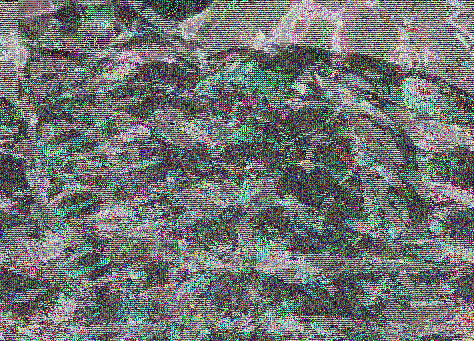
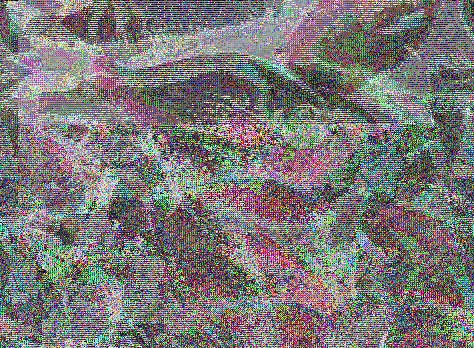
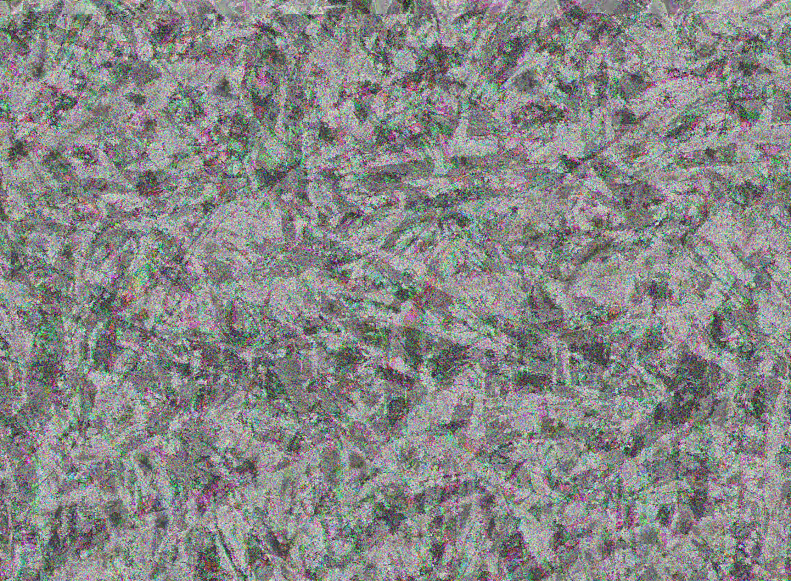
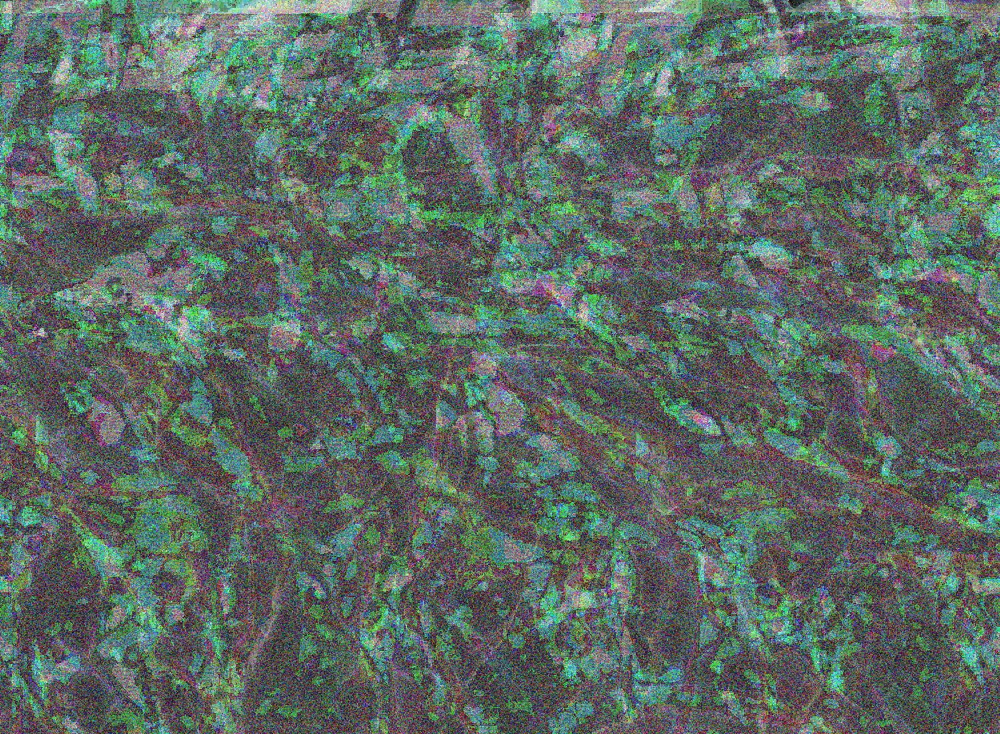
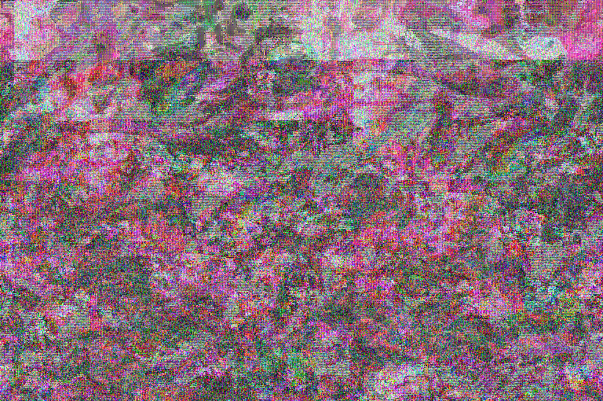

This project explores the concept of re-using images from the internet, altering their appearance to make them unrecognizable. This set of images had originated on the internet as photographs of commercially fished seafood; these piles and piles of fish lose their original identity and exist in this form for my personal enjoyment. Ghosts of what had existed in these shots previously still show through in small areas, transformed into an amalgamation of shapes and forms. With the visual focus of these images now more hidden and internalized, I plan to pull these apart further and use their content to build iridescence in a larger physical fish sculpture.